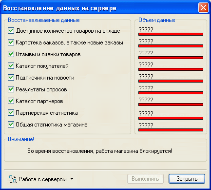
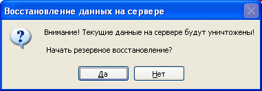
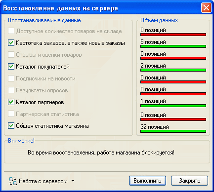

Выбор из главного меню программы Melbis Shop "Утилиты - Серверная база данных - Восстановление бызы данных" после указания имени файла-архива приводит к появлению окна, в котором следует указать тип восстанавливаемых данных из списка предложенных и нажать кнопку «Выполнить». На время выполнения восстановления базы данных работа серверной части магазина блокируется.

Следует понимать, что при восстановлении серверной базы данных текущее состояние восстанавливаемых данных уничтожается, о чем выдается соответствующее уведомление:

Если в архиве, из которого производится восстановление, каких-то данных не было, их наименование в области восстанавливаемых значений становится бледным.
О ходе процесса восстановления можно судить по динамически изменяющимся индикаторам в области "Объем данных". Полное изменение цвета полоски индикатора с красного на зеленый для самого нижнего активного восстанавливаемого типа данных свидетельствует об окончании процесса востановления.

Следует понимать, что резервное восстановление серверной базы данных не касается данных, хранящихся на локальной машине с установленной программой Melbis Shop. Восстановление данных, хранящихся на локальной машине, см. "Восстановление локальной базы данных".